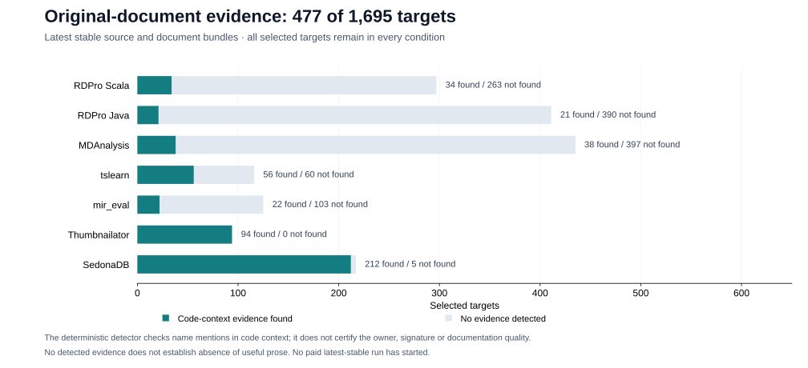

Same targets; documented and uncovered strata
Current latest-stable scope: 1,695 selected targets. Evidence found for 477; no code-context evidence detected for 1,218. Both groups remain in every condition.

Fair comparison
Freeze S before generation. Original, README only, Alias only, Error hints only and Combined use the same selected target identities and common declaration/runtime context. Report all-S outcomes and separate D/U strata; generated documentation must not change the denominator. Original retrieval uses the frozen 12,000-character cap.
The detector identifies code-context name mentions. Common names can match another owner. These labels do not certify documentation quality or prove that useful prose is absent.
Version-matched documentation
MDAnalysis uses 186 tracked stable README/docs files; the old mislabeled hosted development supplement is excluded. tslearn 121 files, mir_eval 23, Thumbnailator 117 including official Maven 0.4.21 Javadoc HTML, RDPro 17, SedonaDB 214. Counts differ from historical bundles and are not treatment effects.
Machine-readable summary · Summary CSV